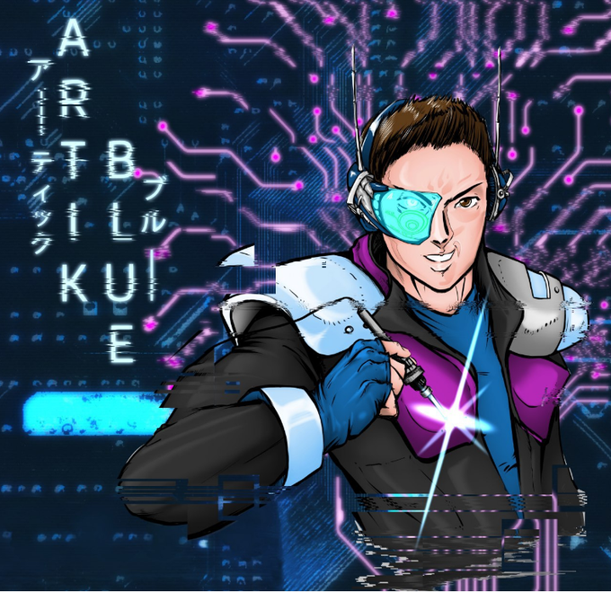

Here you will find publications and projects mostly about reverse engineering, electronics, offensive security and operational security.
About the author
Human interested in many fields that include: electronics, software engineering, hacking, art and political philosophy.
Contact
Find me here on twitter @artikblue! You can also contact me at artikblue@protonmail.com